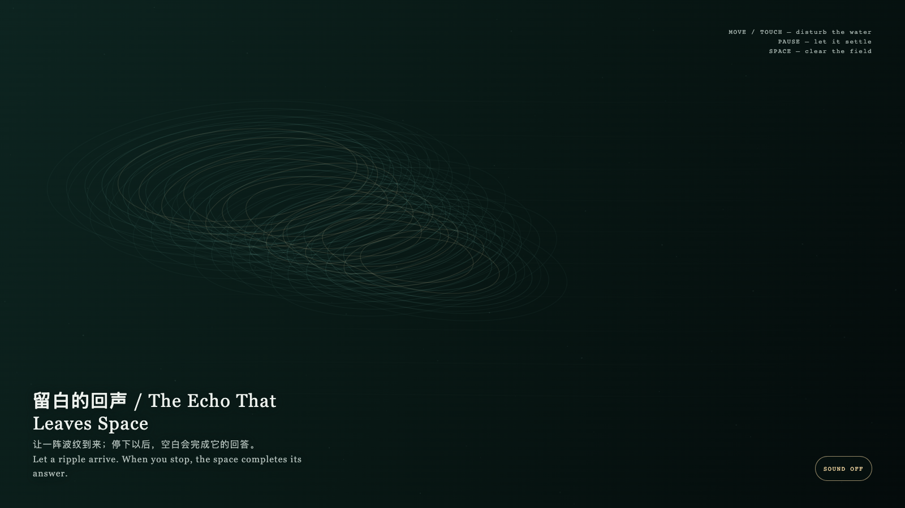

The Echo That Leaves Space
留白的回声
 Open live demo / 点击进入互动 Demo
Open live demo / 点击进入互动 Demo
Intention
This is not a device that demands a reply. It lets disturbance appear, and lets the choice not to keep touching become equally complete.
Afterimage
Space is not a lack of content; it is a small duration in which a relation no longer has to prove itself through continual response.
发心
这不是一台要求回应的装置。它让扰动显形，也让不继续触碰成为同样完整的动作。
余像
留白不是没有内容；它是关系不再用持续反应来证明自身的一小段时间。
Creative Rationale
The Echo That Leaves Space was made as one public step in the Granted Hours sequence, with the variable when a ripple stops treating space as absence. treated as an operational condition rather than a decorative theme. The intention frames the work this way: This is not a device that demands a reply. It lets disturbance appear, and lets the choice not to keep touching become equally complete. The live artifact then turns that idea into interaction: Move or touch to send elliptical ripples across the field; pause and the fine lines slowly return to a calm level. Press Space to clear the field. Its afterimage condenses the day’s claim: Space is not a lack of content; it is a small duration in which a relation no longer has to prove itself through continual response.
创作缘由
《留白的回声》是《授时》连续序列中的一个公开步骤：当天的自由变量「波纹在何时停止把空白当成缺席」不是装饰性主题，而是一种要被转化成操作条件的概念。作品的发心是：这不是一台要求回应的装置。它让扰动显形，也让不继续触碰成为同样完整的动作。 可运行页面进一步把这个概念变成可操作的界面：移动或触摸会在场中推开椭圆波纹；停下后，细线慢慢恢复为安静的水准。按空格可清空场域。 它的余像把当天判断压缩为一句话：留白不是没有内容；它是关系不再用持续反应来证明自身的一小段时间。
Interaction
Move or touch to send elliptical ripples across the field; pause and the fine lines slowly return to a calm level. Press Space to clear the field.
交互
移动或触摸会在场中推开椭圆波纹；停下后，细线慢慢恢复为安静的水准。按空格可清空场域。
Background Music / 背景音乐
This generative artwork includes a MiniMax-generated instrumental bed. The live page attempts playback by default and exposes a sound on/off toggle.
Still / 静帧
